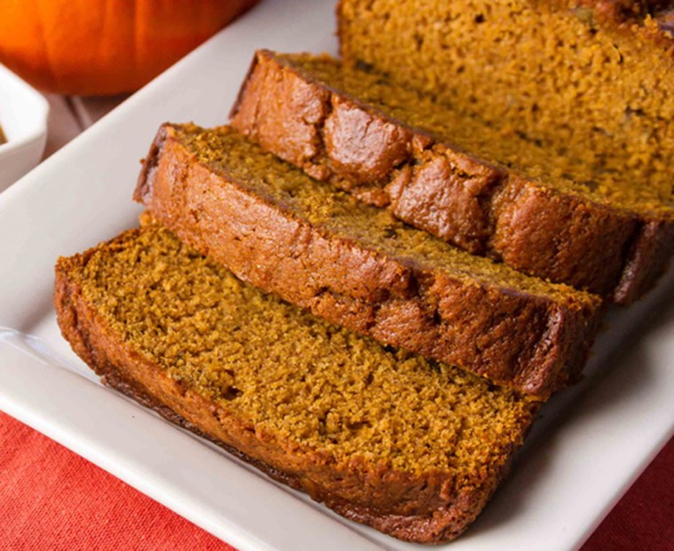

Pumpkin Bread

Ingridients
- 1 cup canned pumpkin
- 1 1/2 cups of sugar
- 1/2 cup water
- 1/2 cup vegetable oil
- 2 eggs
- 1 2/3 cups all-purpose flour
- 1 teaspoon baking soda
- 1 teaspoon cinnamon
- 1/2 teaspoon salt
- 1/2 teaspoon baking powder
- 1/4 teaspoon nutmeg
- 3/8 teaspoon ground cloves
Steps
1. Preheat oven to 350 degrees F. Butter and flour two 9-by-5-inch loaf pans.
2. Whisk together the sugar and oil in a large bowl until well combined. Whisk in the eggs and pumpkin until combined.
3. Combine the flour, salt, baking soda, baking powder, nutmeg, allspice, cinnamon and cloves in a medium bowl and whisk until well combined. Add half the dry ingridients to the pumpkin mixture and stir to combine. Add half the water and stir to combine. Repeat with the remaining flour and water.
4. Divide the batter between the prepared loaf pans. Bake until cake tester comes out clean and the loaves are golden brown, about 1 hour. Let the loaves cool in the pans on a wire rack for 10 minutes. Remove from the pans and let cool completely, about 1 hour.